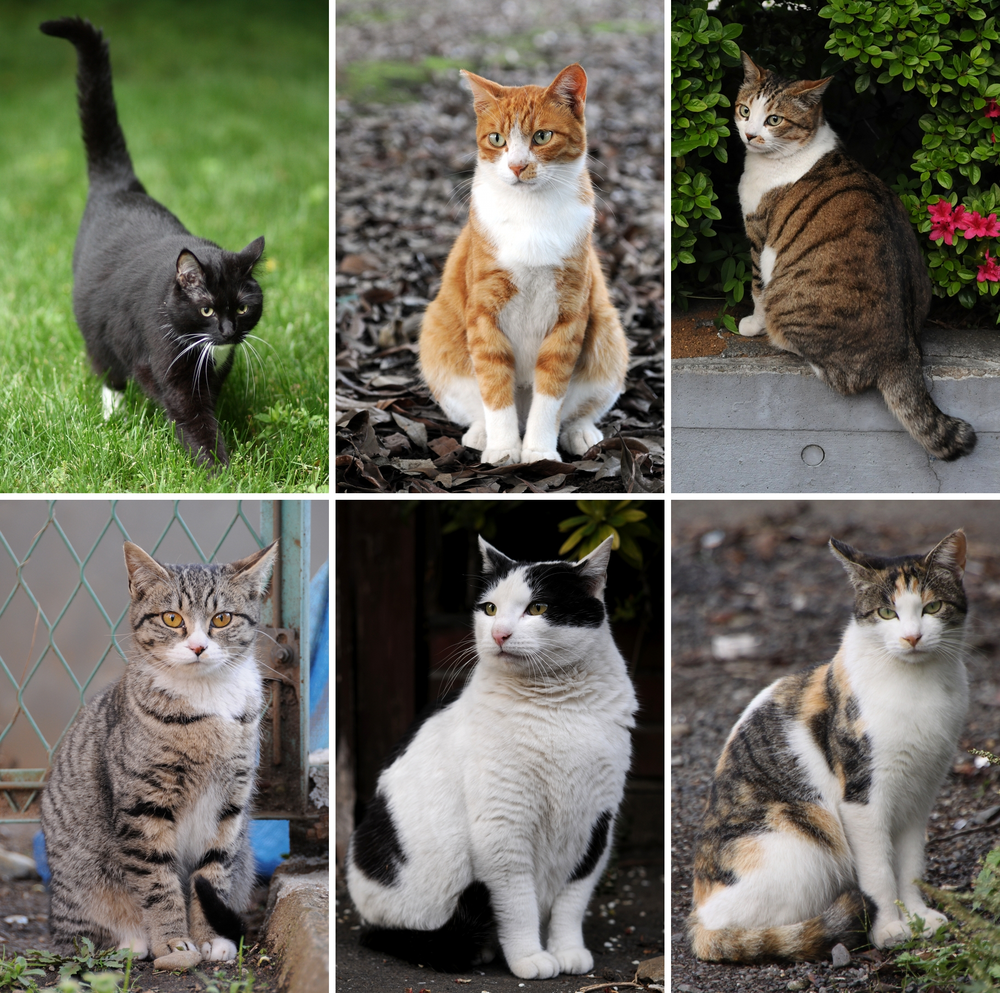

Kucing disebut juga kucing domestik atau kucing rumah (nama ilmiah: Felis silvestris catus atau Felis catus) adalah sejenis mamalia karnivora dari keluarga Felidae. Kata "kucing" biasanya merujuk kepada "kucing" yang telah dijinakkan,[6] tetapi bisa juga merujuk kepada "kucing besar" seperti singa dan harimau. Kucing telah berbaur dengan kehidupan manusia paling tidak sejak 6.000 tahun SM, dari kerangka kucing di Pulau Siprus. Orang Mesir Kuno dari 3.500 SM telah menggunakan kucing untuk menjauhkan tikus atau hewan pengerat lain dari lumbung yang menyimpan hasil panen. Saat ini, kucing adalah salah satu hewan peliharaan terpopuler di dunia.[9] Kucing yang garis keturunannya tercatat secara resmi sebagai kucing trah atau galur murni (pure breed), seperti persia, siam, manx, dan sphinx. Kucing seperti ini biasanya dibiakkan di tempat pemeliharaan hewan resmi. Jumlah kucing ras hanyalah 1% dari seluruh kucing di dunia, sisanya adalah kucing dengan keturunan campuran seperti kucing liar atau kucing kampung.